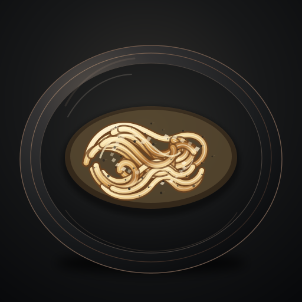
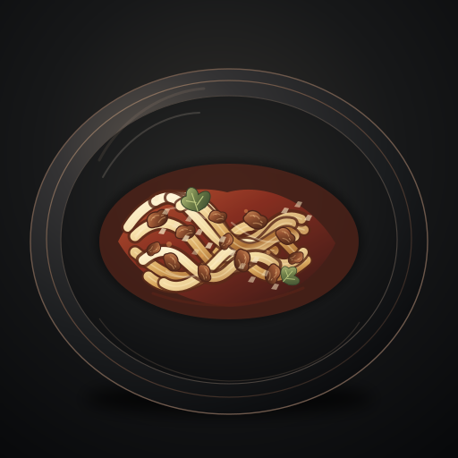
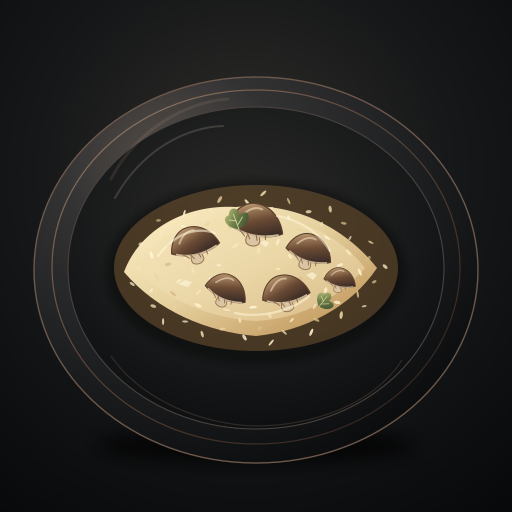
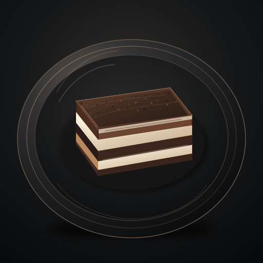
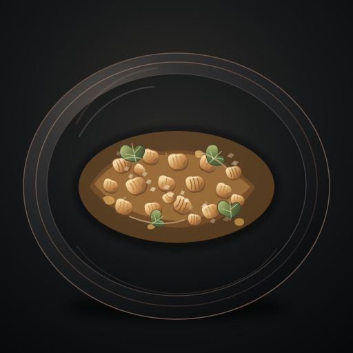

Kuchnik · preview pack 1.4.52
Osobna strona testowa. Nie podmienia jeszcze grafik w aplikacji ani nie zmienia danych użytkownika. Otwórz każde danie i oceń styl, czytelność oraz dopasowanie do ciemnego interfejsu.




